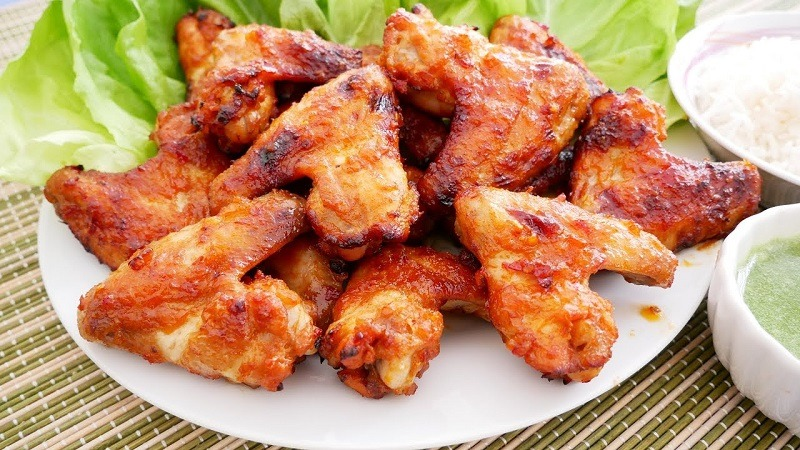

Nhà hàng ẩm thực
TRANG CHỦ
GIỚI THIỆU
ẨM THỰC
CÁC MÓN LẨU
CÁC MÓN NƯỚNG
ĐỒ UỐNG
LIÊN HỆ
TUYỂN DỤNG
GIỎ HÀNG
Lẩu thái chua cay
Lẩu mắm
Lẩu bò
Lẩu cua đồng
Lẩu lươn chua cay
Lẩu đuôi bò
Bò cuộn nấm kim chi
Bạch tuộc nướng
Bò xiên rau củ nướng
Gà nướng măng đen
Hàu nướng mỡ hành
Tôm nướng muối ớt
Rượu đế
Bia tiger
Coca
Nước lọc
Nước chanh

TRANG CHỦ
/
CÁC MÓN NƯỚNG
Gà nướng Măng Đen
380,000 đ
Còn hàng
Đặt ngay
MÔ TẢ CHI TIẾT
Gà nướng Măng Đen là một món ăn đặc sản của địa phương thị trấn Măng Đen,huyện Kon Plông tỉnh Kon Tum. Thịt được tẩm ướp gia vị từ một số loài rễ, lá, mật ong và cây rừng Kon Tum nên gà nướng mang hương vị đặc biệt. Khi thưởng thức nên chấm thêm muối tiêu hoặc muối hột lớn với ớt cay cay hay lá bét (một loại lá rừng). Món gà nướng cũng làm từ gà bản địa, độn vào bên trong con gà một nắm lá tiêu rừng, nướng trên bếp than hồng xoay tròn đến khi chín vàng.